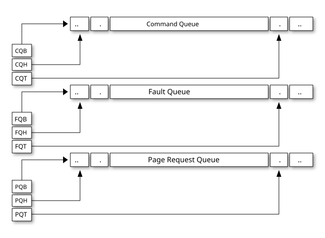

In-memory queue interface
Software and IOMMU interact using 3 in-memory queue data structures.
-
A command-queue (
CQ) used by software to queue commands to the IOMMU. -
A fault/event queue (
FQ) used by IOMMU to bring faults and events to software’s attention. -
A page-request queue (
PQ) used by IOMMU to report “Page Request” messages received from PCIe devices. This queue is supported if the IOMMU supports PCIe [5] defined Page Request Interface.

Each queue is a circular buffer with a head controlled by the consumer of data
from the queue and a tail controlled by the producer of data into the queue.
IOMMU is the producer of records into PQ and FQ and controls the tail register.
IOMMU is the consumer of commands produced by software into the CQ and controls
the head register. The tail register holds the index into the queue where the
next entry will be written by the producer. The head register holds the index
into the queue where the consumer will read the next entry to process.
A queue is empty if the head is equal to the tail. A queue is full if the tail is the head minus one. The head and tail wrap around when they reach the end of the circular buffer.
The producer of data must ensure that the data written to a queue and the tail update are ordered such that the consumer that observes an update to the tail register must also observe all data produced into the queue between the offsets determined by the head and the tail.
|
All RISC-V IOMMU implementations are required to support in-memory queues located in main memory. Supporting in-memory queues in I/O memory is not required but is not prohibited by this specification. The implication of the queue being considered full when tail is head minus one is that the effective size of the queue is one less than the number of entries in the queue. |
Command-Queue (CQ)
Command queue is used by software to queue commands to be processed by the IOMMU. Each command is 16 bytes.
The PPN of the base of this in-memory queue and the size of the queue is
configured into a memory-mapped register called command-queue base (cqb).
The tail of the command-queue resides in a software-controlled read/write
memory-mapped register called command-queue tail (cqt). The cqt is an
index into the next command queue entry that software will write. Subsequent
to writing the command(s), software advances the cqt by the count of the
number of commands written.
The head of the command-queue resides in a read-only memory-mapped IOMMU
controlled register called command-queue head (cqh). The cqh is an index
into the command queue that IOMMU should process next. Subsequent to reading
each command the IOMMU may advance the cqh by 1. If cqh == cqt, the
command-queue is empty. If cqt == (cqh - 1) the command-queue is full.
When an error bit or the fence_w_ip bit in cqcsr is 1, the command-queue
interrupt pending (cip) bit is set in the ipsr if interrupts from
command-queue are enabled (i.e. cqcsr.cie is 1).
IOMMU commands are grouped into a major command group determined by the opcode
and within each group the func3 field specifies the function invoked by that
command. The opcode defines the format of the operand fields. One or more of
those fields may be used by the specific function invoked. The opcode
encodings 64 to 127 are designated for custom use.
The commands are interpreted as two 64-bit doublewords. The byte order of each
of the doublewords in memory, little-endian or big-endian, is the endianness as
determined by fctl.BE (iommu_registers.adoc#FCTRL).
The following command opcodes are defined:
opcode |
Encoding | Description |
|---|---|---|
|
1 |
IOMMU page-table cache invalidation commands. |
|
2 |
IOMMU command-queue fence commands. |
|
3 |
IOMMU directory cache invalidation commands. |
|
4 |
IOMMU PCIe [5] ATS commands. |
Reserved |
5-63 |
Reserved for future standard use. |
Custom |
64-127 |
Designated for custom use. |
All undefined functions of command opcodes 0 through 63 are reserved for future standard use.
A command is determined to be illegal if it uses a reserved encoding or if a
reserved bit is set to 1. A command is unsupported if it is defined but not
implemented as determined by the IOMMU capabilities register. If an illegal or
unsupported command is fetched and decoded by the command-queue then the
command-queue sets the cqcsr.cmd_ill bit and stops processing commands from
the command-queue. To re-enable command processing software should clear the
cmd_ill bit by writing 1 to it.
IOMMU Page-Table cache invalidation commands
IOMMU operations cause implicit reads to PDT, first-stage and second-stage page tables. To reduce latency of such reads, the IOMMU may cache entries from the first-stage and/or second-stage page tables in the IOMMU-address-translation-cache (IOATC). These caches might not observe modifications performed by software to these data structures in memory.
The IOMMU translation-table cache invalidation commands, IOTINVAL.VMA and
IOTINVAL.GVMA synchronize updates to in-memory first-stage and second-stage
page table data structures respectively with the operation of the IOMMU and
invalidate the matching IOATC entries.
The GV operand indicates if the Guest-Soft-Context ID (GSCID) operand is
valid. The PSCV operand indicates if the Process Soft-Context ID (PSCID)
operand is valid. Setting PSCV to 1 is allowed only for IOTINVAL.VMA. The
AV operand indicates if the address (ADDR) operand is valid. When GV is 0,
the translations associated with the host (i.e. those where the second-stage
is Bare) are operated on. When GV is 0, the GSCID operand is ignored.
When AV is 0, the ADDR operand is ignored. When PSCV operand is 0, the
PSCID operand is ignored. When the AV operand is set to 1, if the ADDR
operand specifies an invalid address, the command may or may not perform any
invalidations.
The definition of the NL bit is provided by the non-leaf PTE invalidation
extension iommu_extensions.adoc#NLINV. The definition of the S bit is provided by the address
range invalidation extension iommu_extensions.adoc#ARINV.
|
When an invalid address is specified, an implementation may either complete the
command with no effect or may complete the command using an alternate, yet
|
IOTINVAL.VMA ensures that previous stores made to the first-stage page
tables by the harts are observed by the IOMMU before all subsequent implicit
reads from IOMMU to the corresponding first-stage page tables.
GV |
AV |
PSCV |
Operation |
|---|---|---|---|
0 |
0 |
0 |
Invalidates all address-translation cache entries, including those that contain global mappings, for all host address spaces. |
0 |
0 |
1 |
Invalidates all address-translation cache entries for the
host address space identified by |
0 |
1 |
0 |
Invalidates all address-translation cache entries that
contain first-stage leaf page table entries, including those
that contain global mappings, corresponding to the IOVA in
|
0 |
1 |
1 |
Invalidates all address-translation cache entries that
contain first-stage leaf page table entries corresponding to
the IOVA in |
1 |
0 |
0 |
Invalidates all address-translation cache entries, including
those that contain global mappings, for all VM address spaces
associated with |
1 |
0 |
1 |
Invalidates all address-translation cache entries
for the VM address space identified by |
1 |
1 |
0 |
Invalidates all address-translation cache entries that
contain first-stage leaf page table entries, including those
that contain global mappings, corresponding to the IOVA in
|
1 |
1 |
1 |
Invalidates all address-translation cache entries that
contain first-stage leaf page table entries corresponding to
the IOVA in |
IOTINVAL.GVMA ensures that previous stores made to the second-stage page
tables are observed before all subsequent implicit reads from IOMMU to the
corresponding second-stage page tables. Setting PSCV to 1 with IOTINVAL.GVMA
is illegal.
GV |
AV |
Operation |
|---|---|---|
0 |
ignored |
Invalidates information cached from any level of the second-stage page table, for all VM address spaces. |
1 |
0 |
Invalidates information cached from any level of the
second-stage page tables, but only for VM address spaces
identified by the |
1 |
1 |
Invalidates information cached from leaf second-stage page
table entries corresponding to the guest-physical-address in
|
|
Conceptually, an implementation might contain two address-translation caches:
one that maps guest virtual addresses to guest physical addresses, and another
that maps guest physical addresses to supervisor physical addresses.
|
|
More commonly, implementations contain address-translation caches that map
guest virtual addresses directly to supervisor physical addresses, removing a
level of indirection. For such implementations, any entry whose guest virtual
address maps to a guest physical address that matches the Simpler implementations may ignore the operand of Some implementations may cache an identity-mapped translation for the stage of
address translation operating in A consequence of this specification is that an implementation may use any
translation for an address that was valid at any time since the most recent
In a conventional TLB design, it is possible for multiple entries to match a
single address if, for example, a page is upgraded to a larger page without
first clearing the original non-leaf PTE’s valid bit and executing an
Another consequence of this specification is that it is generally unsafe to update a PTE using a set of stores of a width less than the width of the PTE, as it is legal for the implementation to read the PTE at any time, including when only some of the partial stores have taken effect. |
IOMMU Command-queue Fence commands
The IOMMU fetches commands from the CQ in order but the IOMMU may execute the
fetched commands out of order. The IOMMU advancing cqh is not a guarantee
that the commands fetched by the IOMMU have been executed or committed.
A IOFENCE.C command completion, as determined by cqh advancing past the
index of the IOFENCE.C command in the CQ, guarantees that all previous
commands fetched from the CQ have been completed and committed.
If the IOFENCE.C times out waiting on completion of previous commands that are
specified to have a timeout, then the cmd_to bit in cqcsr iommu_registers.adoc#CSR is set to
signal this condition. The cqh holds the index of the IOFENCE.C that timed
out and all previous commands that are not specified to have a timeout have been
completed and committed.
|
In this version of the specification, only the |
The commands may be used to order memory accesses from I/O devices connected to the IOMMU as viewed by the IOMMU, other RISC-V harts, and external devices or co-processors.
The PR bit, when set to 1, can be used to request that the IOMMU ensure
that all previous read requests from devices that have already been processed
by the IOMMU be committed to a global ordering point such that they can be
observed by all RISC-V harts and IOMMUs in the system.
The PW bit, when set to 1, can be used to request that the IOMMU ensure
that all previous write requests from devices that have already been processed
by the IOMMU be committed to a global ordering point such that they can be
observed by all RISC-V harts and IOMMUs in the system.
The wire-signaled-interrupts (WSI) bit when set to 1 causes a wired-interrupt
from the command queue to be generated (by setting cqcsr.fence_w_ip - iommu_registers.adoc#CSR)
on completion of IOFENCE.C. This bit is reserved if the IOMMU does not support
wired-interrupts or wired-interrupts have not been enabled
(i.e., fctl.WSI == 0).
|
Software should ensure that all previous read and writes processed by the IOMMU
have been committed to a global ordering point before reclaiming memory that was
previously made accessible to a device. A safe sequence for such memory
reclamation is to first update the page tables to disallow access to the memory
from the device and then use the The The ordering guarantees are made for accesses to main-memory. For accesses to I/O memory, the ordering guarantees are implementation and I/O protocol defined. Simpler implementations may unconditionally order all previous memory accesses globally. |
The AV command operand indicates if ADDR[63:2] and DATA operands are
valid. If AV=1, the IOMMU writes DATA to memory at a 4-byte aligned address
ADDR[63:2] * 4 as a 4-byte store when the command completes. When AV is 0,
the ADDR[63:2] and DATA operands are ignored. If the attempt to perform this
write encounters a memory fault, the cmd_mf bit in cqcsr iommu_registers.adoc#CSR is set to
signal this condition, and the cqh holds the index of the IOFENCE.C that
encountered such a memory fault and did not complete.
|
Software may configure the |
IOMMU directory cache invalidation commands
IOMMU operations cause implicit reads to DDT and/or PDT. To reduce latency of such reads, the IOMMU may cache entries from the DDT and/or PDT in IOMMU directory caches. These caches might not observe modifications performed by software to these data structures in memory.
The IOMMU DDT cache invalidation command, IODIR.INVAL_DDT, synchronizes updates
to DDT with the operation of the IOMMU and flushes the matching cached entries.
The IOMMU PDT cache invalidation command, IODIR.INVAL_PDT, synchronizes updates
to PDT with the operation of the IOMMU and flushes the matching cached entries.
The DV operand indicates if the device ID (DID) operand is valid. The DV
operand must be 1 for IODIR.INVAL_PDT else the command is illegal. When DV
operand is 1, the value of the DID operand must not be wider than that
supported by the ddtp.iommu_mode.
IODIR.INVAL_DDT guarantees that any previous stores made by a RISC-V hart to
the DDT are observed before all subsequent implicit reads from IOMMU to DDT.
If DV is 0, then the command invalidates all DDT and PDT entries cached for
all devices; the DID operand is ignored. If DV is 1, then the command
invalidates cached leaf-level DDT entry for the device identified by DID
operand and all associated PDT entries. The PID operand is reserved for the
IODIR.INVAL_DDT command.
IODIR.INVAL_PDT guarantees that any previous stores made by a RISC-V hart to
the PDT are observed before all subsequent implicit reads from IOMMU to PDT.
The command invalidates cached leaf PDT entry for the specified PID and DID.
The PID operand of IODIR.INVAL_PDT must not be wider than the width
supported by the IOMMU (see iommu_registers.adoc#CAP).
|
Some fields in the Device-context or Process-context may be guest-physical addresses. An implementation when caching the device-context or process-context may cache these fields after translating them to a supervisor physical address. Other implementations may cache them as guest-physical addresses and translate them to supervisor physical addresses using a second-stage page table just prior to accessing memory referenced by these addresses. If second-stage page tables used for these translations are modified, software
must issue the appropriate The |
IOMMU PCIe ATS commands
This command is supported if capabilities.ATS is set to 1.
The ATS.INVAL command instructs the IOMMU to send an “Invalidation Request”
message to the PCIe device function identified by RID. An
“Invalidation Request” message is used to clear a specific subset of the
address range from the address translation cache in a device function. The
ATS.INVAL command completes when an “Invalidation Completion” response message
is received from the device or a protocol-defined timeout occurs while waiting
for a response. The IOMMU may advance the cqh and fetch more commands from
CQ while a response is awaited. If a timeout occurs, it is reported when a
subsequent IOFENCE.C command is executed.
|
Software that needs to know if the invalidation operation completed on the
device may use the IOMMU command-queue fence command ( If one or more ATS invalidation commands preceding the |
The ATS.PRGR command instructs the IOMMU to send a “Page Request Group
Response” message to the PCIe device function identified by the RID. The
“Page Request Group Response” message is used by system hardware and/or
software to communicate with the device functions page-request interface to
signal completion of a “Page Request”, or the catastrophic failure of the
interface.
If the PV operand is set to 1, the message is generated with a PASID with the
PASID field set to the PID operand. if PV operand is set to 0, then the
PID operand is ignored and the message is generated without a PASID.
The PAYLOAD operand of the command is used to form the message body and its
fields are as specified by the PCIe specification [5]. The PAYLOAD field is
formatted as follows:
PAYLOAD of an ATS.INVAL commandPAYLOAD of an ATS.PRGR commandIf the DSV operand is 1, then a valid destination segment number is specified
by the DSEG operand. If the DSV operand is 0, then the DSEG operand is
ignored.
|
A Hierarchy is a PCI Express I/O interconnect topology, wherein the Configuration Space addresses, referred to as the tuple of Bus/Device/Function Numbers, are unique. In some contexts, a Hierarchy is also called a Segment, and in Flit Mode, the Segment number is sometimes included in the ID of a Function. |
Fault/Event-Queue (FQ)
Fault/Event queue is an in-memory queue data structure used to report events and faults raised when processing transactions. Each fault record is 32 bytes.
The PPN of the base of this in-memory queue and the size of the queue is
configured into a memory-mapped register called fault-queue base (fqb).
The tail of the fault-queue resides in an IOMMU controlled read-only
memory-mapped register called fqt. The fqt is an index into the next fault
record that IOMMU will write in the fault-queue. Subsequent to writing the
record, the IOMMU advances the fqt by 1. The head of the fault-queue resides
in a read/write memory-mapped software controlled register called fqh. The fqh
is an index into the fault record that SW should process next. Subsequent
to processing fault record(s) software advances the fqh by the count of the
number of fault records processed. If fqh == fqt, the fault-queue is empty. If
fqt == (fqh - 1) the fault-queue is full.
The fault records are interpreted as four 64-bit doublewords. The byte order of
each of the doublewords in memory, little-endian or big-endian, is the endianness
as determined by fctl.BE (iommu_registers.adoc#FCTRL).
The CAUSE is a code indicating the cause of the fault/event.
| CAUSE | Description | Reported if DTF is 1? |
|---|---|---|
1 |
Instruction access fault |
No |
4 |
Read address misaligned |
No |
5 |
Read access fault |
No |
6 |
Write/AMO address misaligned |
No |
7 |
Write/AMO access fault |
No |
12 |
Instruction page fault |
No |
13 |
Read page fault |
No |
15 |
Write/AMO page fault |
No |
20 |
Instruction guest page fault |
No |
21 |
Read guest-page fault |
No |
23 |
Write/AMO guest-page fault |
No |
256 |
All inbound transactions disallowed |
Yes |
257 |
DDT entry load access fault |
Yes |
258 |
DDT entry not valid |
Yes |
259 |
DDT entry misconfigured |
Yes |
260 |
Transaction type disallowed |
No |
261 |
MSI PTE load access fault |
No |
262 |
MSI PTE not valid |
No |
263 |
MSI PTE misconfigured |
No |
264 |
MRIF access fault |
No |
265 |
PDT entry load access fault |
No |
266 |
PDT entry not valid |
No |
267 |
PDT entry misconfigured |
No |
268 |
DDT data corruption |
Yes |
269 |
PDT data corruption |
No |
270 |
MSI PT data corruption |
No |
271 |
MSI MRIF data corruption |
No |
272 |
Internal data path error |
Yes |
273 |
IOMMU MSI write access fault |
Yes |
274 |
First/second-stage PT data corruption |
No |
The CAUSE encodings 275 through 2047 are reserved for future standard use and
the encodings 2048 through 4095 are designated for custom use. Encodings between
0 and 275 that are not specified in Table 4 are reserved for future
standard use.
If a fault condition prevents locating a valid device context then the DTF
value assumed for reporting such faults is 0.
The TTYP field reports inbound transaction type.
| TTYP | Description |
|---|---|
0 |
None. Fault not caused by an inbound transaction. |
1 |
Untranslated read for execute transaction |
2 |
Untranslated read transaction |
3 |
Untranslated write/AMO transaction |
4 |
Reserved |
5 |
Translated read for execute transaction |
6 |
Translated read transaction |
7 |
Translated write/AMO transaction |
8 |
PCIe ATS Translation Request |
9 |
PCIe Message Request |
10 - 31 |
Reserved |
31 - 63 |
Designated for custom use |
If the TTYP is a transaction with an IOVA, the IOVA is reported in iotval. If
the TTYP is a PCIe message request, the message code of the PCIe message
is reported in iotval. If TTYP is 0, the values reported in iotval and
iotval2 fields are as defined by the CAUSE.
|
The |
DID holds the device_id of the transaction. If PV is 0, then PID and
PRIV are 0. If PV is 1, the PID holds a process_id of the transaction
and if the privilege of the transaction was Supervisor then the PRIV bit is 1
else it’s 0. The DID, PV, PID, and PRIV fields are 0 if TTYP is 0.
If the CAUSE is a guest-page fault then bits 63:2 of the zero-extended
guest-physical-address are reported in iotval2[63:2]. If bit 0 of iotval2 is
1, then the guest-page-fault was caused by an implicit memory access for
first-stage address translation. If bit 0 of iotval2 is 1, and the implicit
access was a write then bit 1 of iotval2 is set to 1 else it is set to 0.
|
The bit 1 of When the second-stage is not Bare, the memory accesses for reading PDT entries to
locate the Process-context are implicit memory accesses for first-stage address
translation. If a guest-page fault was caused by implicit memory access to read
PDT entries, then bit 0 of |
The IOMMU may be unable to report faults through the fault-queue due to error
conditions such as the fault-queue being full or the IOMMU encountering access
faults when attempting to access the queue memory. A memory-mapped fault
control and status register (fqcsr) holds information about such faults. If
the fault-queue full condition is detected, the IOMMU sets the fault-queue overflow
(fqof) bit in fqcsr. If the IOMMU encounters a fault in accessing the
fault-queue memory, the IOMMU sets the fault-queue memory access fault (fqmf)
bit in fqcsr. While either error bit is set in fqcsr, the IOMMU discards
the record that led to the fault and all further fault records. When an error
bit in fqcsr is 1 or when a new fault record is produced in the fault-queue,
the fault interrupt pending (fip) bit is set in ipsr if interrupts from
the fault-queue are enabled i.e. fqcsr.fie is 1.
The IOMMU may identify multiple requests as having detected an identical fault. In such cases the IOMMU may report each of those faults individually, or report the fault for a subset, including one, of requests.
Page-Request-Queue (PQ)
Page-request queue is an in-memory queue data structure used to report PCIe
ATS “Page Request” and "Stop Marker" messages [5] to software. The base PPN of
this in-memory queue and the size of the queue is configured into a
memory-mapped register called page-request queue base (pqb).
Each Page-Request record is 16 bytes.
The tail of the queue resides in an IOMMU controlled read-only memory-mapped
register called pqt. The pqt holds an index into the queue where the next
page-request message will be written by the IOMMU. Subsequent to writing the
message, the IOMMU advances the pqt by 1.
The head of the queue resides in a software controlled read/write memory-mapped
register called pqh. The pqh holds an index into the queue where the next
page-request message will be received by software. Subsequent to processing the
message(s) software advances the pqh by the count of the number of messages
processed.
If pqh == pqt, the page-request queue is empty.
If pqt == (pqh - 1) the page-request queue is full.
The IOMMU may be unable to report "Page Request" messages through the queue due
to error conditions such as the queue being disabled, queue being full, or the
IOMMU encountering access faults when attempting to access queue memory. A
memory-mapped page-request queue control and status register (pqcsr) is used
to hold information about such faults. On a page queue full condition the
page-request-queue overflow (pqof) bit is set in pqcsr. If the IOMMU
encountered a fault in accessing the queue memory, the page-request-queue memory
access fault (pqmf) bit is set in pqcsr. While either error bit is set in
pqcsr, the IOMMU discards all subsequent "Page Request" messages, including
the message that caused the error bits to be set. "Page request" messages that
do not require a response, i.e. those with the "Last Request in PRG" field is 0,
are silently discarded. "Page request" messages that require a response, i.e.
those with "Last Request in PRG" field set to 1 and are not "Stop Marker"
messages, may be auto-completed by an IOMMU generated “Page Request Group
Response” message as specified in iommu_data_structures.adoc#ATS_PRI.
When an error bit in pqcsr is 1 or when a new message is produced in the
queue, the page-request-queue interrupt pending (pip) bit is set in the ipsr if
interrupts from page-request-queue are enabled i.e. pqcsr.pie is 1.
The DID field holds the requester ID from the message. The PID field is
valid if PV is 1 and reports the PASID from message. PRIV is set to 0 if the
message did not have a PASID, otherwise it holds the “Privilege Mode Requested”
bit from the TLP. The EXEC bit is set to 0 if the message did not have a PASID,
otherwise it reports the “Execute Requested” bit from the TLP. All other fields
are set to 0. The payload of the “Page Request” message (bytes 0x08 through 0x0F
of the message) is held in the PAYLOAD field. If R and W are both 0 and
L is 1, the message is "Stop Marker".
The page-request-queue records are interpreted as two 64-bit doublewords. The byte
order of each of the doublewords in memory, little-endian or big-endian, is the
endianness as determined by fctl.BE (iommu_registers.adoc#FCTRL).
endianness as determined by fctl.BE (iommu_registers.adoc#FCTRL).
The PAYLOAD holds the message body and its fields are as specified by the PCIe
specification [5]. The PAYLOAD field is formatted as follows:
PAYLOAD of a "Page request" message